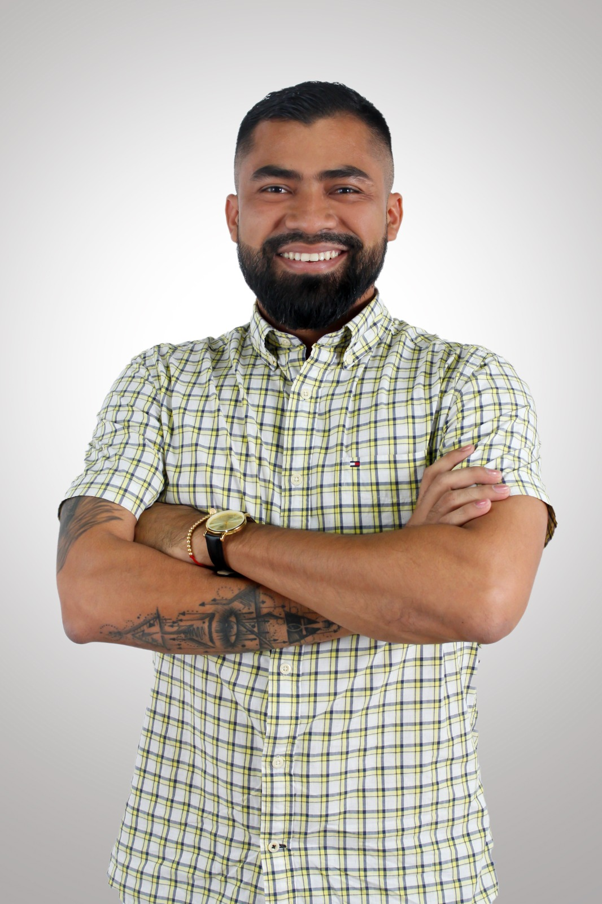

Equipo Docente

Asp. Dr. Henry Vertel
Experto en Automatizaciones e IA Aplicada a la Educación
Asp. PhD en Ciencias de la Educación. 10 años de experiencia en Educación.
JG
Mg. Juan García
Especialista en Tecnología Educativa
Magister en EdTech. Desarrollador de plataformas educativas innovadoras.
AS
Dra. Ana Sánchez
Neuroeducación Aplicada
Neurocientífica especializada en procesos de aprendizaje y memoria.